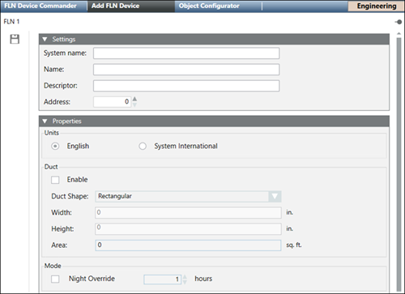

Add an FLN Device
- An FLN folder already exists under an APOGEE P2 panel.
- From System Browser, select the FLN folder, and then select the Add FLN Device tab.

- In the Settings expander, complete the following fields:
- System Name (the System Name must be unique across the APOGEE System)
- Name
- Descriptor
- Address (the Address, also known as Drop Number, must match the physical device address for the TEC) - In the Properties expander, complete the following fields:
- Units (select English or System International)
- Enable (click to configure duct shape and size)
- Night Override (click to modify the default setting of 1 hour) - Click Save
 .
.
- The TEC device is added to the FLN.